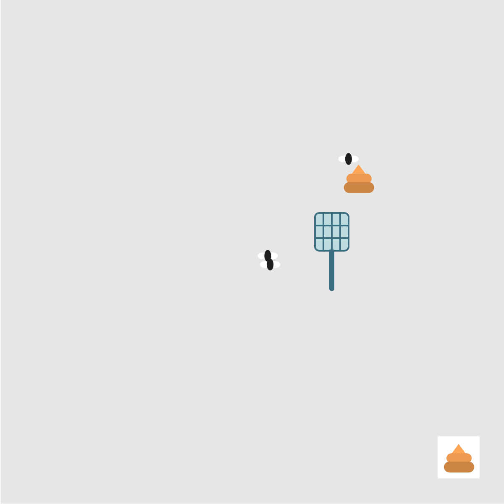

WEEK 3
Interactive Interface
An interactive interface where users can control a fly swatter and interact with animated flies.
let fly1X = 100;
let fly1Y = 100;
let fly2X = 250;
let fly2Y = 200;
let fly3X = 400;
let fly3Y = 300;
let BtnX = 520;
let BtnY = 520;
let BtnSize = 50;
let poopooBtnX = BtnX+25;
let poopooBtnY = BtnY+9;
let poopooX = 100;
let poopooY = 100;
let timer = 0;
let show = false;
function setup() {
createCanvas(600, 600);
}
//click btn
function mouseClicked() {
if (mouseX > BtnX && mouseX < BtnX+BtnSize &&
mouseY > BtnY && mouseY < BtnY+BtnSize) {
//give poopoo a random position
poopooX = random(50,550);
poopooY = random(50,550);
console.log("clicked!");
timer = 0;
show = true;
}
}
function draw() {
background(230);
timer = timer + deltaTime;
// console.log(timer);
//show poopoo
if(show==true){
//draw poopoo
fill(255,165,79);
triangle(poopooX-8, poopooY+11, poopooX, poopooY, poopooX+8, poopooY+11);
fill(238,154,73);
rect(poopooX-14.5, poopooY+11, 30, 12, 6);
fill(205,133,63);
rect(poopooX-17.5, poopooY+21, 36, 13, 7);
// direction (delta x and delta y)
let fly1XdeltaX = poopooX - fly1X;
let fly1YdeltaY = poopooY - fly1Y;
let fly2XdeltaX = poopooX - fly2X;
let fly2YdeltaY = poopooY - fly2Y;
let fly3XdeltaX = poopooX - fly3X;
let fly3YdeltaY = poopooY - fly3Y;
//new position = old position + speed * direction * time
fly1X = fly1X + 1 * fly1XdeltaX * deltaTime/1000;
fly1Y = fly1Y + 1 * fly1YdeltaY * deltaTime/1000;
fly2X = fly2X + 0.4 * fly2XdeltaX * deltaTime/1000;
fly2Y = fly2Y + 0.4 * fly2YdeltaY * deltaTime/1000;
fly3X = fly3X + 0.8 * fly3XdeltaX * deltaTime/1000;
fly3Y = fly3Y + 0.8 * fly3YdeltaY * deltaTime/1000;
}
//poopoo disappears after 8sec
if(timer >= 8000){
timer = 0;
show = false;
}
// console.log(show);
//hover btn show shadow
if(mouseX>500 && mouseX<550 && mouseY>500 && mouseY<550){
fill(200);
rect(BtnX,BtnY,BtnSize+4,BtnSize+4);
}
//btn
fill(255);
rect(BtnX,BtnY,BtnSize,BtnSize);
// poopoo
fill(255,165,79);
triangle(poopooBtnX-8, poopooBtnY+11, poopooBtnX, poopooBtnY, poopooBtnX+8, poopooBtnY+11);
fill(238,154,73);
rect(poopooBtnX-14.5, poopooBtnY+11, 30, 12, 6);
fill(205,133,63);
rect(poopooBtnX-17.5, poopooBtnY+21, 36, 13, 7);
// 随机移动
fly1X = fly1X + random(-2, 2);
fly1Y = fly1Y + random(-2, 2);
fly2X = fly2X + random(-2, 2);
fly2Y = fly2Y + random(-2, 2);
fly3X = fly3X + random(-2, 2);
fly3Y = fly3Y + random(-2, 2);
// 第一只躲鼠标
if (dist(mouseX, mouseY, fly1X, fly1Y) < 80) {
if (mouseX < fly1X) {
fly1X = fly1X + 4;
} else {
fly1X = fly1X - 4;
}
if (mouseY < fly1Y) {
fly1Y = fly1Y + 4;
} else {
fly1Y = fly1Y - 4;
}
}
// 第二只躲鼠标
if (dist(mouseX, mouseY, fly2X, fly2Y) < 80) {
if (mouseX < fly2X) {
fly2X = fly2X + 4;
} else {
fly2X = fly2X - 4;
}
if (mouseY < fly2Y) {
fly2Y = fly2Y + 4;
} else {
fly2Y = fly2Y - 4;
}
}
// 第三只躲鼠标
if (dist(mouseX, mouseY, fly3X, fly3Y) < 80) {
if (mouseX < fly3X) {
fly3X = fly3X + 4;
} else {
fly3X = fly3X - 4;
}
if (mouseY < fly3Y) {
fly3Y = fly3Y + 4;
} else {
fly3Y = fly3Y - 4;
}
}
// 不让苍蝇离开画布
fly1X = constrain(fly1X, 15, width - 15);
fly1Y = constrain(fly1Y, 15, height - 15);
fly2X = constrain(fly2X, 15, width - 15);
fly2Y = constrain(fly2Y, 15, height - 15);
fly3X = constrain(fly3X, 15, width - 15);
fly3Y = constrain(fly3Y, 15, height - 15);
// 翅膀
noStroke();
fill(255);
ellipse(fly1X - 6, fly1Y, 12, 8);
ellipse(fly1X + 6, fly1Y, 12, 8);
ellipse(fly2X - 6, fly2Y, 12, 8);
ellipse(fly2X + 6, fly2Y, 12, 8);
ellipse(fly3X - 6, fly3Y, 12, 8);
ellipse(fly3X + 6, fly3Y, 12, 8);
// 身体
fill(30);
ellipse(fly1X, fly1Y, 8, 14);
ellipse(fly2X, fly2Y, 8, 14);
ellipse(fly3X, fly3Y, 8, 14);
// noCursor();
push();
if (mouseIsPressed) {
translate(mouseX, mouseY + 65);
rotate(-PI / 8);
translate(-mouseX, -mouseY - 65);
}
//拍子
stroke(60, 110, 130);
strokeWeight(6);
line(mouseX, mouseY + 20, mouseX, mouseY + 65);
strokeWeight(2);
fill(160, 210, 220, 150);
rect(mouseX - 20, mouseY - 25, 40, 45, 5);
line(mouseX - 10, mouseY - 25, mouseX - 10, mouseY + 20);
line(mouseX, mouseY - 25, mouseX, mouseY + 20);
line(mouseX + 10, mouseY - 25, mouseX + 10, mouseY + 20);
line(mouseX - 20, mouseY - 10, mouseX + 20, mouseY - 10);
line(mouseX - 20, mouseY + 5, mouseX + 20, mouseY + 5);
pop();
}

Run the code in p5.jsHover and Click Btn
Use mouseX and mouseY to check whether the mouse is inside the button and respond to
hovering and clicking.
mouseClicked() runs once after the mouse button is
pressed and released.
mousePressed() runs once when it is pressed.
//Click
function mouseClicked() {
if (mouseX > BtnX && mouseX < BtnX+BtnSize &&
mouseY > BtnY && mouseY < BtnY+BtnSize) {
console.log("clicked!");
}
}
function draw() {
...
//Hover
if(mouseX>500 && mouseX<550 && mouseY>500 && mouseY<550){
fill(200);
rect(BtnX,BtnY,BtnSize+4,BtnSize+4);
}
...
}
Click show poopoo
Use a Boolean variable called show to control whether poopoo is visible.
It starts as false. When the button is clicked, show becomes true, and poopoo appears at a
random position.
let show = false;
function mouseClicked() {
if (mouseX > BtnX && mouseX < BtnX+BtnSize &&
mouseY > BtnY && mouseY < BtnY+BtnSize) {
//give poopoo a random position
poopooX = random(50,550);
poopooY = random(50,550);
show = true;
}
}
function draw() {
...
if(show==true){
//draw poopoo
fill(255,165,79);
triangle(poopooX-8, poopooY+11, poopooX, poopooY, poopooX+8, poopooY+11);
fill(238,154,73);
rect(poopooX-14.5, poopooY+11, 30, 12, 6);
fill(205,133,63);
rect(poopooX-17.5, poopooY+21, 36, 13, 7);
}
...
}
Timer
Use a timer to make poopoo disappear after 8 seconds.
Clicking the button resets the timer to 0. While poopoo is visible, I add deltaTime to the timer
each frame.
When the timer reaches 8000 milliseconds, show becomes false.
deltaTime is the time between frames.
millis() is the time since the sketch started running. Both are measured in milliseconds.
let timer = 0;
function mouseClicked() {
if (mouseX > BtnX && mouseX < BtnX+BtnSize &&
mouseY > BtnY && mouseY < BtnY+BtnSize) {
...
timer = 0;
...
}
}
function draw() {
//show poopoo
if(show==true){
timer = timer + deltaTime;
// console.log(timer);
...
//poopoo disappears after 8sec
if(timer >= 8000){
timer = 0;
show = false;
}
...
}
}
The flies move toward poopoo
Calculate deltaX and deltaY by subtracting each fly's position from poopoo's position.
Together, these values form a direction vector pointing toward poopoo.
Update each fly's position using these values, a movement rate, and deltaTime.
Each fly moves at a different rate and slows down as it gets closer to poopoo.
function draw(){
if(show==true){
...
// direction (delta x and delta y)
let fly1XdeltaX = poopooX - fly1X;
let fly1YdeltaY = poopooY - fly1Y;
let fly2XdeltaX = poopooX - fly2X;
let fly2YdeltaY = poopooY - fly2Y;
let fly3XdeltaX = poopooX - fly3X;
let fly3YdeltaY = poopooY - fly3Y;
//new position = old position + speed * direction * time
fly1X = fly1X + 1 * fly1XdeltaX * deltaTime/1000;
fly1Y = fly1Y + 1 * fly1YdeltaY * deltaTime/1000;
fly2X = fly2X + 0.4 * fly2XdeltaX * deltaTime/1000;
fly2Y = fly2Y + 0.4 * fly2YdeltaY * deltaTime/1000;
fly3X = fly3X + 0.8 * fly3XdeltaX * deltaTime/1000;
fly3Y = fly3Y + 0.8 * fly3YdeltaY * deltaTime/1000;
...
}
}